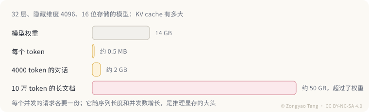
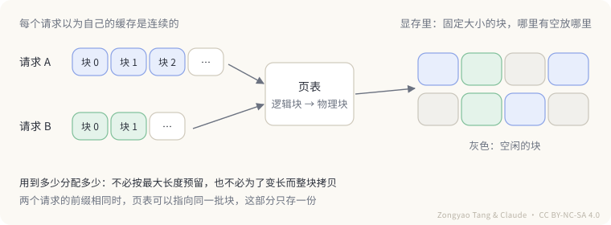

线索是：生成一段文字分成两个阶段，它们的瓶颈不一样 → decode 阶段单独一个请求很浪费，把很多请求批在一起才高效 → 批处理的上限由一样东西决定：KV cache 占的显存 → 所以怎样管理这块显存，成了推理引擎的核心问题。这一单元讲“一个请求怎么算、一张卡能放多少请求”；很多请求同时来时怎样安排，放在 9.3。
第 9 部分 · 推理系统（选读）9.1 LLM 推理与服务
这一单元回答生成一段文字时，GPU 在忙什么？怎样让一张卡同时服务很多人？
承接 4.1 的矩阵乘向量：推理的瓶颈和训练完全不同。量化放在 9.2 接着讲。
讲解
1prefill 受算力限制，decode 受带宽限制
推理分两个阶段：prefill 一次性处理整段提示词，是大矩阵乘法；decode 每次只生成一个 token，是矩阵乘向量（4.1）。首字延迟主要由 prefill 决定，之后每个字的速度主要由 decode 决定。
用户发来一段提示词，模型要接着写下去。整个过程分两段。

先一次读完提示词，再一个一个地写 prefill：把提示词“读”进去。 提示词的 N 个 token 是已知的，一次性送进模型。这和训练时的前向完全一样（1.4）：所有位置同时计算，每一层是大矩阵乘大矩阵。这一阶段的产出有两样：最后一个位置的输出（用来预测第一个新 token），以及每一层、每个位置的 K 和 V，它们被存进 KV cache（4.1）。
4.1 分析过：权重读一遍，被 N 个位置反复使用，算术强度高。瓶颈在算力。提示词越长，这一阶段越久，大致成正比（注意力部分增长得更快）。
decode：一个一个地写。 之后每一步：把刚生成的那一个 token 送进模型；每一层为它算出 Q、K、V，K 和 V 追加进缓存，用 Q 和缓存里所有的 K、V 做注意力；最后得到下一个 token。重复，直到生成结束符。
每一步只有一个新位置。4.1 分析过：这是矩阵乘向量，权重读一遍只用一次。瓶颈在显存带宽。每一步的时间和已经生成了多长关系不大（注意力要看整个缓存，但那只占一小部分），主要取决于模型有多大。
两个阶段决定了两种延迟。
- 首 token 延迟 ≈ 排队 + prefill 的时间。
- 之后每个 token 的间隔 = decode 一步的时间。
用 4.1 的估算感受一下。 一个 7B 的模型，16 位权重 14 GB，显存带宽 1 TB/s 左右的卡：
- decode：每一步至少要读一遍权重，约 14 毫秒，每秒最多 70 个 token 左右。算力几乎闲着。
- prefill 2000 个 token：运算量约 2 × 7×10⁹ × 2000 = 2.8×10¹³ 次（每个 token 前向约 2N）。按 300 TFLOPS 的峰值、五成的利用率，约 0.2 秒。算力是满的。
同一个模型、同一张卡，两个阶段分别顶在了硬件的两个不同的上限上。
所以它们要分开优化。
- prefill 想要的：更强的算力、Flash Attention（4.4）、以及尽量别重复算（9.3 的前缀缓存）。
- decode 想要的：更少的字节（9.2 的量化）、把多个请求批在一起（下一节）、更高的显存带宽。
9.3 会讲到，把这两种性格的工作混在同一个 batch 里会互相妨碍，有的系统干脆用不同的 GPU 分别做。
打个比方像回答问题：prefill 是一口气读完整个问题，decode 是一个字一个字地写出答案。
所以两个阶段的优化手段不同：prefill 要算力，decode 要带宽和批处理；有些系统甚至把两者放到不同的 GPU 上分开跑。
- decode 时算力闲着、带宽吃紧。这种不平衡正好可以利用。
2批处理：读一次权重，服务一批请求
decode 时权重读一遍只用来算一个 token，太浪费。把 B 个请求放在一起，读一次权重就能为 B 个请求各算一个 token，算术强度提高 B 倍。continuous batching 更进一步：每生成一步，就让已结束的请求离开、新请求加入。
单个请求的浪费。 decode 一步，把 14 GB 的权重从显存搬出来，每个权重只做了一次乘加，算出一个 token。GPU 的运算单元大部分时间在等数据。
批处理。 把 B 个用户的请求放在一起，每一步同时为每个请求算一个新 token。每一层的运算从“权重矩阵 × 1 个向量”变成“权重矩阵 × B 个向量”。
- 权重还是只读一遍。
- 每个权重现在做了 B 次乘加。
- 这一步的时间几乎不变（瓶颈是读权重，而读的量没变），却产出了 B 个 token。
用 3.3 的话说，算术强度提高了 B 倍，运算单元从“闲着”变成“有活干”。这是 0.1 里“成批处理，摊薄固定成本”最直接的例子：读一遍权重是固定成本，分摊给了 B 个请求。
能涨到多高。 吞吐随 B 近似线性上升，直到碰到下面三个上限之一：
- *算力。* B 大到运算单元忙不过来，瓶颈从带宽变成算力。之后再加大 B，每一步的时间开始成比例变长，吞吐不再增加。这个转折点大约在“B × 每个位置的运算量 ÷ 峰值算力 ≈ 读一遍权重的时间”处，对常见的模型是几十到几百。
- *KV cache 的显存。* 每个请求都有自己的一份缓存（下一节）。常常在算力用满之前，显存先放不下了。
- *延迟。* B 越大，每一步越慢（即使在带宽受限的区间，KV cache 的读写也随 B 增加），每个用户的每 token 延迟变差。服务有延迟要求时，B 不能无限大（9.3）。
这解释了一个常见的现象。 在自己电脑上跑一个模型，每秒几十个 token；云上的服务同一个模型，一张卡每秒能产出几千个 token。差别主要不在硬件，而在云上同时服务着上百个请求。单个用户感受到的速度差不多，但每个 token 分摊的成本低了两个数量级。
实际的批处理要处理的麻烦。 训练时一个 batch 里的序列可以补齐到一样长。推理时请求陆续到达，各自处于不同的进度，各自的 KV cache 长度不同，结束的时间也不同。怎样让请求随时加入、随时离开，是 9.3 讲的连续批处理。
打个比方公交车又回来了：一趟车的成本几乎固定，多拉一个人几乎不增加成本；而且每到一站都可以有人上下车。
所以吞吐几乎随并发线性增长，直到变成算力受限或者 KV cache 放不下；服务端推理比单机聊天高效得多，原因就在这里。
- 批处理的三个上限里，最先碰到的通常是显存。
3KV cache 是推理显存的大头
每个请求的 KV cache 大小 = 2（K 和 V）× 层数 × 隐藏维度 × 序列长度 × 每个数的字节数。长上下文、高并发时，它比模型权重还大。
4.1 讲过 KV cache 是什么：每一层把已经算过的 K 和 V 存下来，避免重复计算。这里算它有多大。
公式。 一个请求的缓存 = 2（K 和 V）× 层数 × 序列长度 × 隐藏维度 × 每个数的字节数。
（隐藏维度 = 头数 × 每个头的维度。用了后面说的 GQA 时，要把它换成“K、V 的头数 × 每个头的维度”。）
代入一个中等的模型。 32 层，隐藏维度 4096，16 位存储：
- 每个 token：2 × 32 × 4096 × 2 字节 ≈ 0.5 MB。
- 一个 4000 token 的对话：约 2 GB。
- 一个 10 万 token 的长文档：约 50 GB，超过了模型权重本身。

上面几个数字放在一起看 一张卡能放多少请求。 80 GB 的卡，模型权重占 14 GB，剩下约 60 GB 给 KV cache。平均每个请求 4000 token 的话，只能同时放 30 个左右。上一节说吞吐随并发线性增长，而并发在这里被卡在了 30。算力还远远没有用满。
所以推理的容量规划，第一步算的是显存而不是算力：能同时放下多少请求的上下文。
缩小它的办法。
- *让几个头共用一组 K、V。* 标准的多头注意力每个头有自己的 K 和 V（1.4）。分组查询注意力（GQA）让若干个头共用一组，比如 32 个查询头只配 8 组 K、V，缓存直接缩小到四分之一。极端的情况是所有头共用一组（MQA）。这是模型结构上的改动，要在训练时就定下来。现在的大模型大多采用了 GQA。
- *用更少的位数存。* 把缓存量化到 8 位（9.2）。
- *不为没用到的部分预留。* 下一节的 PagedAttention。
- *跨请求共享相同的部分。* 9.3 的前缀缓存。
- *挪到别处。* 把暂时不活跃的请求的缓存移到主内存甚至硬盘，需要时再搬回来。搬运的速度受 PCIe 带宽限制（5.1）。
它也影响 decode 的速度。 每一步的注意力要把这个请求的整个缓存读一遍。上下文很长时，“读缓存”会成为每一步里和“读权重”同样重要的开销。所以长上下文的请求不只占显存，每个 token 也更慢。
回到 2.1 的显存账本：训练时最大的一笔是为反向保存的激活值；推理没有反向，取而代之的最大一笔就是 KV cache。两者都随序列长度和并发（batch）增长。
打个比方像餐厅：厨房（模型权重）大小固定，真正限制接待人数的是餐桌（每位客人的 KV cache）有多少张。
所以一张卡能同时服务多少请求，往往取决于 KV cache 放不放得下；GQA/MQA（多个头共用 K、V）、KV cache 量化，都是在缩小它。
- 知道了缓存有多大。还有一个问题：它的大小事先不知道。
4PagedAttention：像操作系统管内存一样管 KV cache
每个请求最终生成多长事先不知道，按最大长度预留显存会浪费大半。vLLM 把 KV cache 切成固定大小的页，按需分配，用页表记录位置；SGLang 再用前缀树复用不同请求之间相同的前缀（比如同一个系统提示）。
难处。 一个请求的 KV cache 随着生成一个 token 一个 token 地变长，最终多长取决于模型什么时候输出结束符，事先无从得知。
传统的做法是把每个请求的缓存放在一块连续的显存里。连续就要求事先留够空间：
- 按最大可能的长度预留：一个最终只生成了 50 个 token 的请求，占着能放 4000 个 token 的空间。vLLM 的论文测量过，这种做法下真正被用上的显存只有两到四成。
- 不预留、不够了再换一块更大的：要把已有的缓存整个拷贝过去，而且显存里会留下大大小小的空洞（2.1 讲的碎片）。
操作系统早就遇到过同样的问题。 0.3 回顾过虚拟内存：程序以为自己有一大片连续的内存，实际上操作系统把它切成固定大小的页，每一页可以放在物理内存的任何位置，用一张页表记录对应关系。程序用到哪一页，才分配哪一页。

和操作系统的虚拟内存是同一个办法 PagedAttention 照搬了这个办法。
- 把显存里用于 KV cache 的部分切成固定大小的块，每块能放若干个 token 的 K 和 V（比如 16 个）。
- 每个请求有一张“块表”，记录它的第 1 块、第 2 块……分别在显存的哪个位置。这些块不需要相邻。
- 请求生成到当前的块写满了，再从空闲的块里拿一个，记进块表。
- 请求结束，它所有的块立刻归还，马上可以给别的请求用。
注意力的 kernel 相应地改成按块表去读 K 和 V，而不是假设它们是连续的。
得到的好处。
- 没有预留的浪费：每个请求最多浪费最后一块里没填满的部分。
- 没有外部碎片：所有块一样大，任何一个空闲块都能用。
- 于是同样的显存能放下的并发请求多了几倍。上上节说吞吐随并发增长，所以吞吐也跟着上去。论文报告的吞吐提升是 2 到 4 倍。
顺带得到的能力：共享。 页表的另一个经典用途是让两个进程共享同一段物理内存。这里也一样：两个请求如果开头相同（同一段系统提示词），它们的块表可以指向同一批物理块，这部分 K、V 只存一份、只算一次。一个请求要生成几个不同的候选时，公共的部分也可以共享，到分叉的地方再各自分配新块（操作系统里叫“写时复制”）。9.3 讲的前缀缓存建立在这个能力上。
为什么放在这门课里。 它是“系统的老办法解决 AI 的新问题”的一个漂亮例子。分页、缓存、调度、流水线，这些几十年前为操作系统和体系结构发明的思想，在这门课里一再出现。操作系统课上学的那些东西，并没有过时。
打个比方像图书馆按需分配阅览座位，而不是给每位读者预留一整排。
所以同样的显存能装下多得多的并发请求；共享的前缀还能直接复用，省掉重复的 prefill。
后面会用到 连续批处理：请求随到随进，做完就走
串起来
推理分 prefill（处理提示词，受算力限制）和 decode（逐个生成，受显存带宽限制）。decode 时把很多请求批在一起，读一遍权重服务一批人，吞吐几乎随并发线性上升。并发的上限由 KV cache 的显存决定。PagedAttention 像操作系统管理内存那样按块分配它，避免了预留造成的浪费。
考考自己
不看讲解，用自己的话讲一遍。
- 推理的 prefill 和 decode 两个阶段各自在做什么？它们的瓶颈为什么不同？
- 为什么把多个请求批在一起做 decode，吞吐几乎随并发线性增长？增长到什么时候会停？
- KV cache 的大小怎么算？为什么说它决定了一张卡能同时服务多少请求？
- PagedAttention 解决了 KV cache 管理中的什么问题？它借用了操作系统的什么思想？
术语
- KV cache
- 键值缓存
- continuous batching
- 连续批处理
- prefill
- 预填充
- decode
- 解码